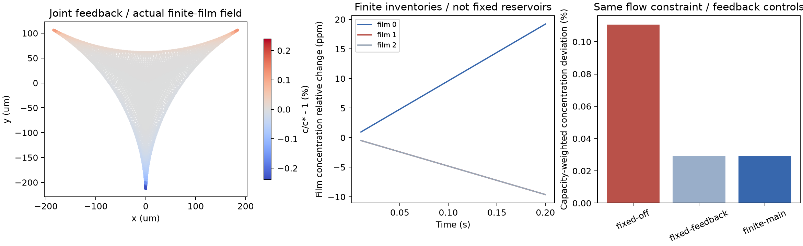

← FROTH 研究入口JOINT FEEDBACK / FINITE INVENTORIES / SPATIAL ACCURACY INCOMPLETE
浓度、流动和有限膜存量
进入同一次求解。
9组、180步。浓度改变Marangoni应力，流动输运表活；三张均匀有限膜同时更新液量、总表活量和入口浓度。固定入口几何及外部指定通流仍是本参考的约束。
8.9×10⁻¹⁶有限膜+边界的最大累计表活量相对误差
0.561%最后两档时间步的容量加权浓度扰动场差
9.68%两级网格共同内部重构场差：尚未收敛

矢量PDF · 9组矩阵、10项检查与全部限制 · 逐膜账本、原速度积分与4项独立审计 · 材料、源码哈希、Python与库版本
求解/收支检查通过，空间精度仍未过关。联合反馈主/细网格的SIP数值面项约占耗散25.9%/21.0%，不能隐去或全部称作物理黏性。有限库存与无限供给的场差很小，远低于当前空间差异；不据此宣称有限库效应决定寿命或级联。
实际更新了哪些量
每张膜的投影长度主值L=.01m、面积由外部固定，液量随入口实测有符号液体通量变化。总库存为N_f=c_f(V_f+2ηL)，包括两侧界面。入口供体用新的膜浓度，出流用边界节点的求解浓度；这些未知量与流函数在同一Newton系统中求解，未用旧浓度滞后一拍。
边界面积固定，因此外向入口流量(q0,−q0/2,−q0/2)代数和为零。q0=8×10⁻¹³m²/s为外部诊断输入：两张膜供液、一张膜接收。本例没有三张膜同时向边界净积液；没有自主排液律、自由形状、空间膜厚、粗化或破裂。
膜厚h_f=V_f/L由计算得到。主算例厚度相对参考接触口最大变化约0.002%，小容量L=.001m对照约0.02%。入口口径仍固定h0=.8μm，这个不一致被记录为小变化参考的近似；在大幅变薄和长时间演化前，必须处理接触几何与几何守恒。
能量式没有丢掉外界做功
理想Henry化学能包含边界和全部有限膜。膜的变化容量用旧容量乘KL余项，体相与界面接触混合耗散分开计算。联合账本包含：
ΔH + D_BE,border + D_BE,films + Δt(D_diff + D_upwind + D_mix + D_visc,SIP − P_boundary + W_surface-pressure) = residual
Stokes功率另检验D_visc,SIP=P_Marangoni+P_boundary。边界反力与界面压力差功保留正负号：外部装置可供能或吸收能量，不能要求总化学能单调下降，也不能称作完整自由泡沫能量定律。关闭反馈时另记录人为抵消Marangoni作用所需的功，避免把无反馈对照伪装成同一机械系统。
膜液量和表活量按单位轴向长度保存，CSV单位分别为m²和mol/m；乘指定轴向长度后才是m³和mol。入口尚未与E04C过渡区BVP匹配，也未解析膜内厚度/浓度分布，因此不能预测自由排液通量。
正式对照与原始数据
fixed为固定入口浓度；finite为有限膜。feedback/off控制浓度对流动的反馈；finite-small长度减到.001m，只作容量对照。no-flow均匀态保持不变。初始边界c/c*=1，膜为[1,1.01,.99]，运行到0.2s；材料与前面的稀溶液参考相同，未做实验标定。
独立复核与失败修正
从保存的膜液量、浓度与摩尔数重建每张膜的增减，逐口对上边界转移账本；再用保存的原生速度场积分−∇c·u，并从原速度矩阵计算体相与SIP耗散。两种Marangoni功计算相对差在10⁻¹³量级；原入口法向速度积分也恢复了指定液量。
第一轮正式矩阵有两项失败，保留在仓库logs/coupled-open/：最小时间步的一个能量点超阈值；关闭反馈的冻结回归场差1.96×10⁻⁸超过1×10⁻⁸目标。使用原速度算子作扩展精度残差，避免显式流函数矩阵的消去误差，并把Newton内部停止值从1×10⁻¹⁰收紧到1×10⁻¹¹。验收门槛未放宽。复跑后冻结回归差8.13×10⁻¹¹，10项检查和4项独立审计通过。
另修正了近等浓度KL表达式的数值消去，用log1p形式计算有限膜的BE余项；原失败日志仍保留。成功矩阵约219秒，另有被拒批次开销，没有ML训练。
这一步证明了什么，尚未证明什么
本离散模型里，反馈使浓度偏离明显小于冻结速度对照，有限膜浓度也按库存更新。主算例有限/固定供给的容量加权场差约0.000555%；这只是接口已起作用的数值证据，当前不能分辨其物理重要性。时间步.02→.01s场差1.125%，.01→.005s差.561%；共同内部3491点的空间重构差9.68%，并非全域或端点误差上界。
下一阶段必须让实际来液、边界储液与几何运动兼容，接入四泡/七泡液体和气体网络，再连接有限速事件；同时保留当前空间误差和数值面项的精度债务。上一阶段冻结速度参考。